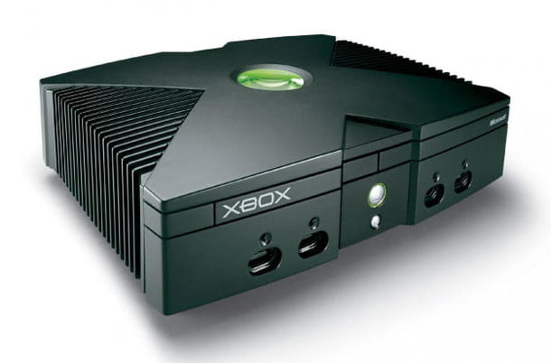

La idea de que Microsoft debería desarrollar su propia consola de juegos comenzó a ganar fuerza en 1998, con Kevin Bachus, Seamus Blackley, Otto Berkes y Ted Hase formando el primer equipo para las consolas del gigante del software, después de lanzar su idea a Bill Gates. Originalmente llamada DirectX Box, la consola estaba destinada a ser el primer sistema de juegos construido como una PC, lo que aportaba toda la flexibilidad y el poder de una plataforma de juegos al mercado de las consolas.
El sistema correría sobre Windows 2000, lo que facilitaría a los desarrolladores de software para PC trabajar dentro de la arquitectura de la consola, además de tener el doble de la capacidad de procesamiento de la PlayStation 2, en ese entonces líder en la industria. Sin embargo a pesar de los esfuerzos del equipo de mercadeo, el nombre no fue bien recibido por los grupos de prueba, por lo que la empresa se vio forzada a enfocarse en uno de los elementos finales que necesitaba para abrir el telón de su creación: un nombre que llame la atención y se convierta en una marca.
Solo dos años después, Microsoft ya estaba listo para hacer pública su consola, y eso es exactamente lo que hizo Bill Gates en la Conferencia de Desarrolladores de Juegos en el 2000. Hablando de las especificaciones enormemente mejoradas del sistema, y el potencial tanto para el juego en línea como para el almacenamiento interno de contenido descargado, (juegos y media), Gates logró atraer la atención del mundo. Muchos siguieron siendo escépticos, pues y no veían más que una PC elegante disfrazada de consola de juegos. Microsoft continuó presionando para romper esquemas tanto en la consola como en su presupuesto de marketing, con más demostraciones en la Electronic Entertainment Expo unos meses más tarde. Fue allí donde su futuro se vio aún más promisorio: el desarrollador de Xbox se conectó por primera vez con Bungie Studios, los creadores de un juego de acción y disparos en tercera persona, Halo: Combat Evolved. La compra de Bungie por 30 millones de dólares por parte de Microsoft poco tiempo después llegó a hacer titulares en la industria del juego, pero fue la decisión de Bungie adaptar Halo para aprovechar al máximo las capacidades de la nueva consola y convertirla en un juego de disparos en primera persona. Esta fue la jugada que ayudó a hacer historia.
Casi un año después, Bill Gates, con la ayuda de Dwayne «The Rock» Johnson, reveló el diseño final de la Xbox en el Consumer Electronics Show 2001 en Las Vegas, junto con la fecha de lanzamiento oficial del sistema.